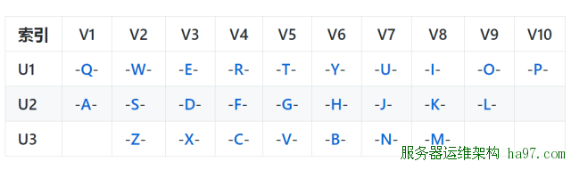

作为最早关注人工智能技术的媒体，机器之心在编译国外技术博客、论文、专家观点等内容上已经积累了超过两年多的经验。期间，从无到有，机器之心的编译团队一直在积累专业词汇。虽然有很多的文章因为专业性我们没能尽善尽美的编译为中文呈现给大家，但我们一直在进步、一直在积累、一直在提高自己的专业性。
两年来，机器之心编译团队整理过翻译词汇对照表「红宝书」，编辑个人也整理过类似的词典。而我们也从机器之心读者留言中发现，有些人工智能专业词汇没有统一的翻译标准，这可能是因地区、跨专业等等原因造成的。举个例子，DeepMind 的一篇论文中有个词汇为 differentiable boundary tree，当时机器之心的翻译为可微分界树，但后来有读者表示这样的译法如果不保留英文很难明白表达的意思且建议翻译为可微分边界树。
因此，我们想把机器之心内部积累的人工智能专业词汇中英对照表开放给大家，希望为大家写论文、中文博客、阅读文章提供帮助。同时，这也是一份开放的表单，希望越来越多的人能够提供增添、修改建议，为人工智能的传播助力。
项目地址：https://github.com/jiqizhixin/Artificial-Intelligence-Terminology
组织形式

读者在此项目中，可通过以上表盘查看自己想要了解的专业词汇。在单个首字母中，表格的组织形式为：英文／缩写、汉语、来源&扩展。
来源&扩展是对该词汇的注解，内容为机器之心往期的相关文章。例如下图所示的「算法」，我们关联到的三篇文章是《回归、分类与聚类：三大方向剖解机器学习算法的优缺点》和《机器学习算法附速查表》和《深度学习算法全景图：从理论证明其正确性》。因此，我们希望不仅能提供相对应的术语，同时还希望能为读者提供每一个术语的来源和概念上的扩展。但由于这一部分工作量较大，我们还将与读者共同推进这一部分扩展的进程。

准确性
本项目中所有英文专业词汇对照的中文都来自机器之心编译的文章和系列机器学习教科书（如周志华的《机器学习》和李航的《统计学习方法》等），我们力求在提供准确翻译的同时保留最常用的形式。同时，为了保证词汇翻译的准确性，我们将此项目向读者开源，并希望能与读者共同迭代术语的准确度。除此之外，我们还将为每一个词汇提供来源与扩展进一步提升词汇的置信度。
机器之心术语编译标准
因为该项目很多术语都是机器之心平常编译文章所积累的，所以我们首先需要向读者说明机器之心术语编译的标准。
1. 常见术语的编译标准
机器之心常见术语的编译首先会确保术语的正确性，其次再考虑术语的传播广度。例如常见术语。logistic regression，首先机器之心会保证该术语的准确度。我们常见 logistic regression 会翻译为逻辑回归，但中文「逻辑」与 logistic 的含义还是有些差别，因此我们并不太倾向于采用这种译法。在准确度的基础上，我们会考虑术语的传播广度。例如有学者建议可以将 logistic regression 译为对数几率回归，但鉴于该译法的传播度不广，看到中文并不会马上检索到对应英文和概念，所以我们最终在常见术语编译标准下将 logistic regression 译为 logistical 回归。机器之心在对常见术语编译时并不会保留英文，也不会做进一步说明。
2. 非常见术语的编译标准
机器之心在编译技术文章或论文时，常常会遇到非常见的术语。因为像论文那样的文章是在特定领域下为解决特定问题而规范化书写的，所以就会存在较多的非常见的术语。而机器之心在编译非常见术语时，唯一的标准就是准确性，通常我们也会保留英文。因为非常见术语通常是数学、神经科学和物理学等领域上的专业术语，机器之心会尽可能地借鉴其他领域内的译法和意义而确定如何编译。例如 fixed-point theorem，在参考数学的情况下，我们会更倾向于译为不动点定理，fixed-point 译为不动点而不是定点。
3. 歧义术语的编译标准
还有很多术语其实是有歧义的，而对于这一类词，机器之心的编译标准会根据语义进行确定，因此也会有一些误差。例如 bias 在描述神经网络层级单元时可以译为偏置项。而在描述训练误差和与叉验证误差间的关系或学习曲线时，bias 可以译为偏差。这样的例子还有很多，比如 Stationary 在马尔可夫模型中可译为稳态分布（Stationary distribution），在最优化问题中可译为驻点（Stationary point），而在涉及博弈论或对抗性训练时，其又可能表达为静态。
以上是机器之心大概编译术语的标准，虽然我们在常用术语的编译上错误率相对较少，但在非常见术语和歧义术语上仍然会出现一些错误。尤其是在非常见术语的编译上，没有特定的背景知识很容易在编译上出现误差。因此我们希望能与读者共同加强术语的编译质量。
词汇更新
本词汇库目前拥有的专业词汇共计 500 个，主要为机器学习基础概念和术语，同时也是该项目的基本词汇。机器之心将继续完善术语的收录和扩展阅读的构建。词汇更新主要分为两个阶段，第一阶段机器之心将继续完善基础词汇的构建，即通过权威教科书或其它有公信力的资料抽取常见术语。第二阶段机器之心将持续性地把编译论文或其他资料所出现的非常见术语更新到词汇表中。
读者的反馈意见和更新建议将贯穿整个阶段，并且我们将在项目致谢页中展示对该项目起积极作用的读者。因为我们希望术语的更新更具准确度和置信度，所以我们希望读者能附上该术语的来源地址与扩展地址。因此，我们能更客观地更新词汇，并附上可信的来源与扩展。
Letter A
| Accumulated error backpropagation | 累积误差逆传播 |
| Activation Function | 激活函数 |
| Adaptive Resonance Theory/ART | 自适应谐振理论 |
| Addictive model | 加性学习 |
| Adversarial Networks | 对抗网络 |
| Affine Layer | 仿射层 |
| Affinity matrix | 亲和矩阵 |
| Agent | 代理 / 智能体 |
| Algorithm | 算法 |
| Alpha-beta pruning | α-β剪枝 |
| Anomaly detection | 异常检测 |
| Approximation | 近似 |
| Area Under ROC Curve／AUC | Roc 曲线下面积 |
| Artificial General Intelligence/AGI | 通用人工智能 |
| Artificial Intelligence/AI | 人工智能 |
| Association analysis | 关联分析 |
| Attention mechanism | 注意力机制 |
| Attribute conditional independence assumption | 属性条件独立性假设 |
| Attribute space | 属性空间 |
| Attribute value | 属性值 |
| Autoencoder | 自编码器 |
| Automatic speech recognition | 自动语音识别 |
| Automatic summarization | 自动摘要 |
| Average gradient | 平均梯度 |
| Average-Pooling | 平均池化 |
Letter B
| Backpropagation Through Time | 通过时间的反向传播 |
| Backpropagation/BP | 反向传播 |
| Base learner | 基学习器 |
| Base learning algorithm | 基学习算法 |
| Batch Normalization/BN | 批量归一化 |
| Bayes decision rule | 贝叶斯判定准则 |
| Bayes Model Averaging／BMA | 贝叶斯模型平均 |
| Bayes optimal classifier | 贝叶斯最优分类器 |
| Bayesian decision theory | 贝叶斯决策论 |
| Bayesian network | 贝叶斯网络 |
| Between-class scatter matrix | 类间散度矩阵 |
| Bias | 偏置 / 偏差 |
| Bias-variance decomposition | 偏差-方差分解 |
| Bias-Variance Dilemma | 偏差 – 方差困境 |
| Bi-directional Long-Short Term Memory/Bi-LSTM | 双向长短期记忆 |
| Binary classification | 二分类 |
| Binomial test | 二项检验 |
| Bi-partition | 二分法 |
| Boltzmann machine | 玻尔兹曼机 |
| Bootstrap sampling | 自助采样法／可重复采样／有放回采样 |
| Bootstrapping | 自助法 |
| Break-Event Point／BEP | 平衡点 |
Letter C
| Calibration | 校准 |
| Cascade-Correlation | 级联相关 |
| Categorical attribute | 离散属性 |
| Class-conditional probability | 类条件概率 |
| Classification and regression tree/CART | 分类与回归树 |
| Classifier | 分类器 |
| Class-imbalance | 类别不平衡 |
| Closed -form | 闭式 |
| Cluster | 簇/类/集群 |
| Cluster analysis | 聚类分析 |
| Clustering | 聚类 |
| Clustering ensemble | 聚类集成 |
| Co-adapting | 共适应 |
| Coding matrix | 编码矩阵 |
| COLT | 国际学习理论会议 |
| Committee-based learning | 基于委员会的学习 |
| Competitive learning | 竞争型学习 |
| Component learner | 组件学习器 |
| Comprehensibility | 可解释性 |
| Computation Cost | 计算成本 |
| Computational Linguistics | 计算语言学 |
| Computer vision | 计算机视觉 |
| Concept drift | 概念漂移 |
| Concept Learning System /CLS | 概念学习系统 |
| Conditional entropy | 条件熵 |
| Conditional mutual information | 条件互信息 |
| Conditional Probability Table／CPT | 条件概率表 |
| Conditional random field/CRF | 条件随机场 |
| Conditional risk | 条件风险 |
| Confidence | 置信度 |
| Confusion matrix | 混淆矩阵 |
| Connection weight | 连接权 |
| Connectionism | 连结主义 |
| Consistency | 一致性／相合性 |
| Contingency table | 列联表 |
| Continuous attribute | 连续属性 |
| Convergence | 收敛 |
| Conversational agent | 会话智能体 |
| Convex quadratic programming | 凸二次规划 |
| Convexity | 凸性 |
| Convolutional neural network/CNN | 卷积神经网络 |
| Co-occurrence | 同现 |
| Correlation coefficient | 相关系数 |
| Cosine similarity | 余弦相似度 |
| Cost curve | 成本曲线 |
| Cost Function | 成本函数 |
| Cost matrix | 成本矩阵 |
| Cost-sensitive | 成本敏感 |
| Cross entropy | 交叉熵 |
| Cross validation | 交叉验证 |
| Crowdsourcing | 众包 |
| Curse of dimensionality | 维数灾难 |
| Cut point | 截断点 |
| Cutting plane algorithm | 割平面法 |
Letter D
| Data mining | 数据挖掘 |
| Data set | 数据集 |
| Decision Boundary | 决策边界 |
| Decision stump | 决策树桩 |
| Decision tree | 决策树／判定树 |
| Deduction | 演绎 |
| Deep Belief Network | 深度信念网络 |
| Deep Convolutional Generative Adversarial Network/DCGAN | 深度卷积生成对抗网络 |
| Deep learning | 深度学习 |
| Deep neural network/DNN | 深度神经网络 |
| Deep Q-Learning | 深度 Q 学习 |
| Deep Q-Network | 深度 Q 网络 |
| Density estimation | 密度估计 |
| Density-based clustering | 密度聚类 |
| Differentiable neural computer | 可微分神经计算机 |
| Dimensionality reduction algorithm | 降维算法 |
| Directed edge | 有向边 |
| Disagreement measure | 不合度量 |
| Discriminative model | 判别模型 |
| Discriminator | 判别器 |
| Distance measure | 距离度量 |
| Distance metric learning | 距离度量学习 |
| Distribution | 分布 |
| Divergence | 散度 |
| Diversity measure | 多样性度量／差异性度量 |
| Domain adaption | 领域自适应 |
| Downsampling | 下采样 |
| D-separation （Directed separation） | 有向分离 |
| Dual problem | 对偶问题 |
| Dummy node | 哑结点 |
| Dynamic Fusion | 动态融合 |
| Dynamic programming | 动态规划 |
Letter E
| Eigenvalue decomposition | 特征值分解 |
| Embedding | 嵌入 |
| Emotional analysis | 情绪分析 |
| Empirical conditional entropy | 经验条件熵 |
| Empirical entropy | 经验熵 |
| Empirical error | 经验误差 |
| Empirical risk | 经验风险 |
| End-to-End | 端到端 |
| Energy-based model | 基于能量的模型 |
| Ensemble learning | 集成学习 |
| Ensemble pruning | 集成修剪 |
| Error Correcting Output Codes／ECOC | 纠错输出码 |
| Error rate | 错误率 |
| Error-ambiguity decomposition | 误差-分歧分解 |
| Euclidean distance | 欧氏距离 |
| Evolutionary computation | 演化计算 |
| Expectation-Maximization | 期望最大化 |
| Expected loss | 期望损失 |
| Exploding Gradient Problem | 梯度爆炸问题 |
| Exponential loss function | 指数损失函数 |
| Extreme Learning Machine/ELM | 超限学习机 |
Letter F
| Factorization | 因子分解 |
| False negative | 假负类 |
| False positive | 假正类 |
| False Positive Rate/FPR | 假正例率 |
| Feature engineering | 特征工程 |
| Feature selection | 特征选择 |
| Feature vector | 特征向量 |
| Featured Learning | 特征学习 |
| Feedforward Neural Networks/FNN | 前馈神经网络 |
| Fine-tuning | 微调 |
| Flipping output | 翻转法 |
| Fluctuation | 震荡 |
| Forward stagewise algorithm | 前向分步算法 |
| Frequentist | 频率主义学派 |
| Full-rank matrix | 满秩矩阵 |
| Functional neuron | 功能神经元 |
Letter G
| Gain ratio | 增益率 |
| Game theory | 博弈论 |
| Gaussian kernel function | 高斯核函数 |
| Gaussian Mixture Model | 高斯混合模型 |
| General Problem Solving | 通用问题求解 |
| Generalization | 泛化 |
| Generalization error | 泛化误差 |
| Generalization error bound | 泛化误差上界 |
| Generalized Lagrange function | 广义拉格朗日函数 |
| Generalized linear model | 广义线性模型 |
| Generalized Rayleigh quotient | 广义瑞利商 |
| Generative Adversarial Networks/GAN | 生成对抗网络 |
| Generative Model | 生成模型 |
| Generator | 生成器 |
| Genetic Algorithm/GA | 遗传算法 |
| Gibbs sampling | 吉布斯采样 |
| Gini index | 基尼指数 |
| Global minimum | 全局最小 |
| Global Optimization | 全局优化 |
| Gradient boosting | 梯度提升 |
| Gradient Descent | 梯度下降 |
| Graph theory | 图论 |
| Ground-truth | 真相／真实 |
Letter H
| Hard margin | 硬间隔 |
| Hard voting | 硬投票 |
| Harmonic mean | 调和平均 |
| Hesse matrix | 海塞矩阵 |
| Hidden dynamic model | 隐动态模型 |
| Hidden layer | 隐藏层 |
| Hidden Markov Model/HMM | 隐马尔可夫模型 |
| Hierarchical clustering | 层次聚类 |
| Hilbert space | 希尔伯特空间 |
| Hinge loss function | 合页损失函数 |
| Hold-out | 留出法 |
| Homogeneous | 同质 |
| Hybrid computing | 混合计算 |
| Hyperparameter | 超参数 |
| Hypothesis | 假设 |
| Hypothesis test | 假设验证 |
Letter I
| ICML | 国际机器学习会议 |
| Improved iterative scaling/IIS | 改进的迭代尺度法 |
| Incremental learning | 增量学习 |
| Independent and identically distributed/i.i.d. | 独立同分布 |
| Independent Component Analysis/ICA | 独立成分分析 |
| Indicator function | 指示函数 |
| Individual learner | 个体学习器 |
| Induction | 归纳 |
| Inductive bias | 归纳偏好 |
| Inductive learning | 归纳学习 |
| Inductive Logic Programming／ILP | 归纳逻辑程序设计 |
| Information entropy | 信息熵 |
| Information gain | 信息增益 |
| Input layer | 输入层 |
| Insensitive loss | 不敏感损失 |
| Inter-cluster similarity | 簇间相似度 |
| International Conference for Machine Learning/ICML | 国际机器学习大会 |
| Intra-cluster similarity | 簇内相似度 |
| Intrinsic value | 固有值 |
| Isometric Mapping/Isomap | 等度量映射 |
| Isotonic regression | 等分回归 |
| Iterative Dichotomiser | 迭代二分器 |
Letter K
| Kernel method | 核方法 |
| Kernel trick | 核技巧 |
| Kernelized Linear Discriminant Analysis／KLDA | 核线性判别分析 |
| K-fold cross validation | k 折交叉验证／k 倍交叉验证 |
| K-Means Clustering | K – 均值聚类 |
| K-Nearest Neighbours Algorithm/KNN | K近邻算法 |
| Knowledge base | 知识库 |
| Knowledge Representation | 知识表征 |
Letter L
| Label space | 标记空间 |
| Lagrange duality | 拉格朗日对偶性 |
| Lagrange multiplier | 拉格朗日乘子 |
| Laplace smoothing | 拉普拉斯平滑 |
| Laplacian correction | 拉普拉斯修正 |
| Latent Dirichlet Allocation | 隐狄利克雷分布 |
| Latent semantic analysis | 潜在语义分析 |
| Latent variable | 隐变量 |
| Lazy learning | 懒惰学习 |
| Learner | 学习器 |
| Learning by analogy | 类比学习 |
| Learning rate | 学习率 |
| Learning Vector Quantization/LVQ | 学习向量量化 |
| Least squares regression tree | 最小二乘回归树 |
| Leave-One-Out/LOO | 留一法 |
| linear chain conditional random field | 线性链条件随机场 |
| Linear Discriminant Analysis／LDA | 线性判别分析 |
| Linear model | 线性模型 |
| Linear Regression | 线性回归 |
| Link function | 联系函数 |
| Local Markov property | 局部马尔可夫性 |
| Local minimum | 局部最小 |
| Log likelihood | 对数似然 |
| Log odds／logit | 对数几率 |
| Logistic Regression | Logistic 回归 |
| Log-likelihood | 对数似然 |
| Log-linear regression | 对数线性回归 |
| Long-Short Term Memory/LSTM | 长短期记忆 |
| Loss function | 损失函数 |
Letter M
| Machine translation/MT | 机器翻译 |
| Macron-P | 宏查准率 |
| Macron-R | 宏查全率 |
| Majority voting | 绝对多数投票法 |
| Manifold assumption | 流形假设 |
| Manifold learning | 流形学习 |
| Margin theory | 间隔理论 |
| Marginal distribution | 边际分布 |
| Marginal independence | 边际独立性 |
| Marginalization | 边际化 |
| Markov Chain Monte Carlo/MCMC | 马尔可夫链蒙特卡罗方法 |
| Markov Random Field | 马尔可夫随机场 |
| Maximal clique | 最大团 |
| Maximum Likelihood Estimation/MLE | 极大似然估计／极大似然法 |
| Maximum margin | 最大间隔 |
| Maximum weighted spanning tree | 最大带权生成树 |
| Max-Pooling | 最大池化 |
| Mean squared error | 均方误差 |
| Meta-learner | 元学习器 |
| Metric learning | 度量学习 |
| Micro-P | 微查准率 |
| Micro-R | 微查全率 |
| Minimal Description Length/MDL | 最小描述长度 |
| Minimax game | 极小极大博弈 |
| Misclassification cost | 误分类成本 |
| Mixture of experts | 混合专家 |
| Momentum | 动量 |
| Moral graph | 道德图／端正图 |
| Multi-class classification | 多分类 |
| Multi-document summarization | 多文档摘要 |
| Multi-layer feedforward neural networks | 多层前馈神经网络 |
| Multilayer Perceptron/MLP | 多层感知器 |
| Multimodal learning | 多模态学习 |
| Multiple Dimensional Scaling | 多维缩放 |
| Multiple linear regression | 多元线性回归 |
| Multi-response Linear Regression ／MLR | 多响应线性回归 |
| Mutual information | 互信息 |
Letter N
| Naive bayes | 朴素贝叶斯 |
| Naive Bayes Classifier | 朴素贝叶斯分类器 |
| Named entity recognition | 命名实体识别 |
| Nash equilibrium | 纳什均衡 |
| Natural language generation/NLG | 自然语言生成 |
| Natural language processing | 自然语言处理 |
| Negative class | 负类 |
| Negative correlation | 负相关法 |
| Negative Log Likelihood | 负对数似然 |
| Neighbourhood Component Analysis/NCA | 近邻成分分析 |
| Neural Machine Translation | 神经机器翻译 |
| Neural Turing Machine | 神经图灵机 |
| Newton method | 牛顿法 |
| NIPS | 国际神经信息处理系统会议 |
| No Free Lunch Theorem／NFL | 没有免费的午餐定理 |
| Noise-contrastive estimation | 噪音对比估计 |
| Nominal attribute | 列名属性 |
| Non-convex optimization | 非凸优化 |
| Nonlinear model | 非线性模型 |
| Non-metric distance | 非度量距离 |
| Non-negative matrix factorization | 非负矩阵分解 |
| Non-ordinal attribute | 无序属性 |
| Non-Saturating Game | 非饱和博弈 |
| Norm | 范数 |
| Normalization | 归一化 |
| Nuclear norm | 核范数 |
| Numerical attribute | 数值属性 |
Letter O
| Objective function | 目标函数 |
| Oblique decision tree | 斜决策树 |
| Occam’s razor | 奥卡姆剃刀 |
| Odds | 几率 |
| Off-Policy | 离策略 |
| One shot learning | 一次性学习 |
| One-Dependent Estimator／ODE | 独依赖估计 |
| On-Policy | 在策略 |
| Ordinal attribute | 有序属性 |
| Out-of-bag estimate | 包外估计 |
| Output layer | 输出层 |
| Output smearing | 输出调制法 |
| Overfitting | 过拟合／过配 |
| Oversampling | 过采样 |
Letter P
| Paired t-test | 成对 t 检验 |
| Pairwise | 成对型 |
| Pairwise Markov property | 成对马尔可夫性 |
| Parameter | 参数 |
| Parameter estimation | 参数估计 |
| Parameter tuning | 调参 |
| Parse tree | 解析树 |
| Particle Swarm Optimization/PSO | 粒子群优化算法 |
| Part-of-speech tagging | 词性标注 |
| Perceptron | 感知机 |
| Performance measure | 性能度量 |
| Plug and Play Generative Network | 即插即用生成网络 |
| Plurality voting | 相对多数投票法 |
| Polarity detection | 极性检测 |
| Polynomial kernel function | 多项式核函数 |
| Pooling | 池化 |
| Positive class | 正类 |
| Positive definite matrix | 正定矩阵 |
| Post-hoc test | 后续检验 |
| Post-pruning | 后剪枝 |
| potential function | 势函数 |
| Precision | 查准率／准确率 |
| Prepruning | 预剪枝 |
| Principal component analysis/PCA | 主成分分析 |
| Principle of multiple explanations | 多释原则 |
| Prior | 先验 |
| Probability Graphical Model | 概率图模型 |
| Proximal Gradient Descent/PGD | 近端梯度下降 |
| Pruning | 剪枝 |
| Pseudo-label | 伪标记 |
Letter Q
| Quantized Neural Network | 量子化神经网络 |
| Quantum computer | 量子计算机 |
| Quantum Computing | 量子计算 |
| Quasi Newton method | 拟牛顿法 |
Letter R
| Radial Basis Function／RBF | 径向基函数 |
| Random Forest Algorithm | 随机森林算法 |
| Random walk | 随机漫步 |
| Recall | 查全率／召回率 |
| Receiver Operating Characteristic/ROC | 受试者工作特征 |
| Rectified Linear Unit/ReLU | 线性修正单元 |
| Recurrent Neural Network | 循环神经网络 |
| Recursive neural network | 递归神经网络 |
| Reference model | 参考模型 |
| Regression | 回归 |
| Regularization | 正则化 |
| Reinforcement learning/RL | 强化学习 |
| Representation learning | 表征学习 |
| Representer theorem | 表示定理 |
| reproducing kernel Hilbert space/RKHS | 再生核希尔伯特空间 |
| Re-sampling | 重采样法 |
| Rescaling | 再缩放 |
| Residual Mapping | 残差映射 |
| Residual Network | 残差网络 |
| Restricted Boltzmann Machine/RBM | 受限玻尔兹曼机 |
| Restricted Isometry Property/RIP | 限定等距性 |
| Re-weighting | 重赋权法 |
| Robustness | 稳健性/鲁棒性 |
| Root node | 根结点 |
| Rule Engine | 规则引擎 |
| Rule learning | 规则学习 |
Letter S
| Saddle point | 鞍点 |
| Sample space | 样本空间 |
| Sampling | 采样 |
| Score function | 评分函数 |
| Self-Driving | 自动驾驶 |
| Self-Organizing Map／SOM | 自组织映射 |
| Semi-naive Bayes classifiers | 半朴素贝叶斯分类器 |
| Semi-Supervised Learning | 半监督学习 |
| semi-Supervised Support Vector Machine | 半监督支持向量机 |
| Sentiment analysis | 情感分析 |
| Separating hyperplane | 分离超平面 |
| Sigmoid function | Sigmoid 函数 |
| Similarity measure | 相似度度量 |
| Simulated annealing | 模拟退火 |
| Simultaneous localization and mapping | 同步定位与地图构建 |
| Singular Value Decomposition | 奇异值分解 |
| Slack variables | 松弛变量 |
| Smoothing | 平滑 |
| Soft margin | 软间隔 |
| Soft margin maximization | 软间隔最大化 |
| Soft voting | 软投票 |
| Sparse representation | 稀疏表征 |
| Sparsity | 稀疏性 |
| Specialization | 特化 |
| Spectral Clustering | 谱聚类 |
| Speech Recognition | 语音识别 |
| Splitting variable | 切分变量 |
| Squashing function | 挤压函数 |
| Stability-plasticity dilemma | 可塑性-稳定性困境 |
| Statistical learning | 统计学习 |
| Status feature function | 状态特征函 |
| Stochastic gradient descent | 随机梯度下降 |
| Stratified sampling | 分层采样 |
| Structural risk | 结构风险 |
| Structural risk minimization/SRM | 结构风险最小化 |
| Subspace | 子空间 |
| Supervised learning | 监督学习／有导师学习 |
| support vector expansion | 支持向量展式 |
| Support Vector Machine/SVM | 支持向量机 |
| Surrogat loss | 替代损失 |
| Surrogate function | 替代函数 |
| Symbolic learning | 符号学习 |
| Symbolism | 符号主义 |
| Synset | 同义词集 |
Letter T
| T-Distribution Stochastic Neighbour Embedding/t-SNE | T – 分布随机近邻嵌入 |
| Tensor | 张量 |
| Tensor Processing Units/TPU | 张量处理单元 |
| The least square method | 最小二乘法 |
| Threshold | 阈值 |
| Threshold logic unit | 阈值逻辑单元 |
| Threshold-moving | 阈值移动 |
| Time Step | 时间步骤 |
| Tokenization | 标记化 |
| Training error | 训练误差 |
| Training instance | 训练示例／训练例 |
| Transductive learning | 直推学习 |
| Transfer learning | 迁移学习 |
| Treebank | 树库 |
| Tria-by-error | 试错法 |
| True negative | 真负类 |
| True positive | 真正类 |
| True Positive Rate/TPR | 真正例率 |
| Turing Machine | 图灵机 |
| Twice-learning | 二次学习 |
Letter U
| Underfitting | 欠拟合／欠配 |
| Undersampling | 欠采样 |
| Understandability | 可理解性 |
| Unequal cost | 非均等代价 |
| Unit-step function | 单位阶跃函数 |
| Univariate decision tree | 单变量决策树 |
| Unsupervised learning | 无监督学习／无导师学习 |
| Unsupervised layer-wise training | 无监督逐层训练 |
| Upsampling | 上采样 |
Letter V
| Vanishing Gradient Problem | 梯度消失问题 |
| Variational inference | 变分推断 |
| VC Theory | VC维理论 |
| Version space | 版本空间 |
| Viterbi algorithm | 维特比算法 |
| Von Neumann architecture | 冯 · 诺伊曼架构 |
Letter W
| Wasserstein GAN/WGAN | Wasserstein生成对抗网络 |
| Weak learner | 弱学习器 |
| Weight | 权重 |
| Weight sharing | 权共享 |
| Weighted voting | 加权投票法 |
| Within-class scatter matrix | 类内散度矩阵 |
| Word embedding | 词嵌入 |
| Word sense disambiguation | 词义消歧 |
Letter Z
| Zero-data learning | 零数据学习 |
| Zero-shot learning | 零次学习 |
No comments yet.